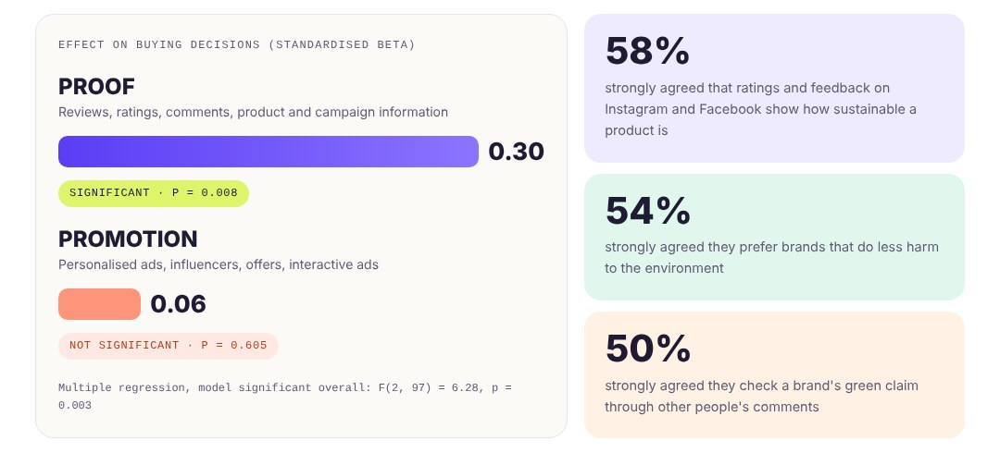

01
Brands post a lot. Few know what makes people buy.
Which post?No clear answer
Influencers, offers, ads, reviews: brands run them all without knowing which one moves a buyer.
Low trustGreenwashing
Vague green claims make shoppers doubt the message.
Not testedA research gap
Earlier studies didn’t test what Instagram and Facebook content does to a purchase.
02
How I did it
Step 1
Built the survey
15 statements in 3 groups, piloted with 10 people.
Why: To measure each type of content separately and fix unclear questions before launch.
Step 2
Collected the data
100 millennial fashion buyers, consent signed, answers anonymised.
Why: To hear from the exact customers sustainable fashion brands target.
Step 3
Tested it in SPSS
Reliability check, multiple regression and cross tabulations.
Why: To prove which content actually changes buying, not just what people say they like.
03
What the data showed

0.30effect of proof (reviews, ratings, comments) on buying, p = 0.008
0.06effect of promotion, not significant (p = 0.605)
58%strongly agreed reviews and ratings show how sustainable a product is
“Personalised ads were the highest rated item in the survey. Promotion as a whole still had no significant effect on buying.”The finding that surprised me most
04
What I’d tell a brand
- 01Show the supply chain: sourcing, materials and certifications on the posts customers already see.
- 02Keep reviews open: that is the proof people look for.
- 03Test before scaling: trial extra influencer or offer spend against a control group.
Limits: the model explains 11.5% of the variation in buying; next time I would add price and quality, and a larger UK sample.
Skills used
Key skills
Survey designQuantitative analysisSPSSMultiple regressionHypothesis testingData cleaningConsumer behaviourInsight to recommendation